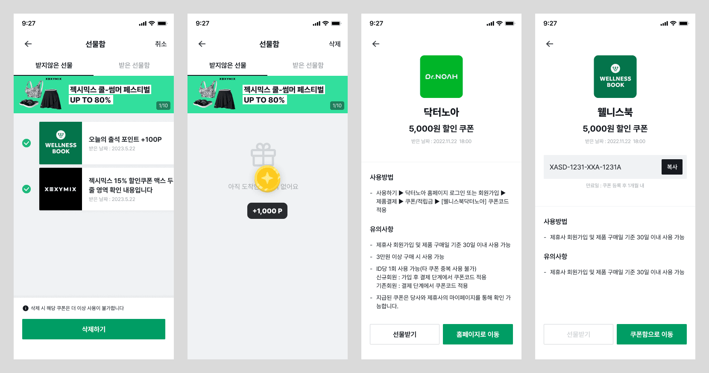

웰니스북 웹뷰
2023.11 - 2024.10

📌 Summary
업데이트가 잦은 앱 화면(웹뷰)과 앱 미설치 고객이 상품 공유 링크를 통해 바로 접근할 수 있는 웹 공유용 랜딩 페이지
- •이벤트 화면이 앱 심사 지연으로 인해 이벤트 시작 일시를 놓치는 문제 발생
- •변경이 잦은 화면(선물함, 쿠폰함 등)을 웹뷰로 제작해 빠르게 배포할 수 있도록 구성
- •웹뷰와 앱의 동일한 기능과 데이터 전달을 위한 자바스크립트 인터페이스 기반의 브릿지 개발
- •앱 미설치 고객을 위한 웹 공유용 랜딩페이지 구현
🤔 Background
- 웰니스북은 모바일 앱으로 제공되는 서비스입니다. 그렇다보니 변경이 잦은 화면 또는 이벤트와 같이 정확한 일시에 시작해야 하는 기능의 경우 앱 심사가 길어지면 시작 일시를 놓치는 문제가 발생했습니다. 이러한 이유로 웹뷰로 만들어야 하는 화면이 필요해졌습니다.
- 기존에는 사용자가 상품을 공유 받으면 앱을 설치한 사용자만 상품 정보를 확인할 수 있었습니다. 이로 인해 앱을 설치하지 않은 사용자는 상품 링크를 공유받았을 때 앱을 설치하지 않고 이탈하는 문제가 발생했습니다.
🔍 Meaning
•웹 - 앱 데이터 전달을 위한 자바스크립트 인터페이스 기반의 브릿지(Bridge) 개발
- 웹뷰에서 앱과 데이터를 주고받거나 앱 기능을 웹에서 활용해야 하는 경우가 많아, 자바스크립트 인터페이스 기반의 브릿지를 개발했습니다. 기존 국민피티(네이티브 앱)에서는 Android와 iOS의 메시지 함수를 각각 따로 설정해야 했지만, 웰니스북(Flutter 앱)에서는 이를 하나의 메시지 함수로 통합하는 방법을 고민했습니다. 결과적으로 postMessage를 활용해 앱과의 데이터 송수신을 일관된 방식으로 구현할 수 있었습니다.
•앱 미설치 고객을 위한 랜딩 페이지 개발
- 앱 미설치 고객도 상품을 확인할 수 있도록 랜딩 페이지를 구현했습니다. 이 과정에서 딥링크(Deeplink) 설정 방법을 학습하게 되었으며, 기존 국민피티(네이티브 앱)에서는 Android와 iOS의 링크 설정이 따로 필요했던 반면, 웰니스북(Flutter 앱)에서는 하나의 URL 스킴으로 통합할 수 있었습니다. 이를 통해 앱 미설치 고객은 랜딩 페이지로, 설치된 경우 앱 내 상품 화면으로 자연스럽게 연결되도록 구현했습니다.
👩🌾 Responsibilities
기여도 : 100%
- •등급 관리
- •혜택/쿠폰 관리
- •CS 관리(1:1 문의, FAQ 등)
- •앱 내 주소 검색을 위한 페이지(웹뷰)
- •상품(프로그램) 공유용 랜딩 페이지
🔨 Technology Stack(s)
- React
- Typescript
- Next.js
- React-query
- Styled-components
- React-hook-form